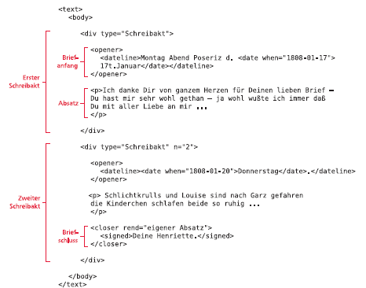

Der transkribierte Text des Manuskripts wird im zweiten Teil des TEI-Baums, dem -Element, abgelegt. Da es keine Titelseite gibt, steht <body/> innerhalb von <text/> alleine.
Schreibakt
Das nächste Element <div type=“Schreibakt“/> steht meistens alleine – das ist dann der Fall, wenn der Brief im großen und ganzen „in einem Zug“ vom Verfasser geschrieben wurde. Ein evtl. vorhandener kleiner Nachtrag kann nach dem <div/> mit <postscript> eingefügt werden.
Es kann aber auch vorkommen, dass der Brief – aus welchen Gründen auch immer – liegen gelassen und einige Tage später vom Autor fortgesetzt wurde. Oftmals notiert der Autor hier auch erneut eine Datumszeile. In diesem Fall wird ein weiterer Schreibakt mit <div type=“Schreibakt“ n=“2“/> gesetzt. Das Attribut @n steht in diesem Fall für die Nummer des Schreibaktes.
In der Autoransicht steht im Menü Brief der Punkt „Neuer Schreibakt“ für das einfache Einfügen zur Verfügung. Innerhalb eines Schreibaktes, d.h. eines div-Elements, können ein Briefanfang, ein Briefschluss sowie unbegrenzt viele Absätze vorkommen. Die einzelnen Schreibakte sind in Oxygen XML Author zur besseren Sichtbarkeit mit einer grauen Linie voneinander abgesetzt.
Briefanfang
Das Element <opener> umfasst den gesamten Briefanfang, d.h. die Datumszeile und die Anrede. Erstere wird mit <dateline> gekennzeichnet und enthält in der Regel einen Ort und eine Datumsangabe die mit <placeName> bzw. <date> eigens ausgezeichnet werden.
Die Anrede, wie z.B. „Liebe Henriette“, wird mit <salute> gekennzeichnet – allerdings nur, wenn sie vor dem ersten Absatz steht. Eine Anrede im Text wird nicht eigens ausgezeichnet.
Bei Bedarf kann im Briefanfang mit <address><addrLine/></adress> auch eine Empfängeradresse notiert werden.
<opener>
<address>
<addrLine>An Lotte Kathen</addrLine>
</address>
<dateline>Kbg d. 15t. Septbr. 1808</dateline>
<salute> Liebste beste Freundin</salute>
</opener>
In der Autoransicht stehen bei einer neu angelegten Datei bereits leere Elemente dafür zur Verfügung und müssen nur noch ausgefüllt werden.
Absätze
Für jeden Absatz im Manuskript kann nun ein Absatz innerhalb des jeweiligen Schreibaktes angelegt werden. Im Absatz können alle Textauszeichnungen verwendet werden.
Briefschluss
Analog zum Briefanfang wird auch der Briefschluss eigens mit <closer> ausgezeichnet. Der Gruß wird wieder mit <salute> notiert, die Unterschrift dagegen mit <signed>. Der Gruß wird nicht eigens ausgezeichnet, wenn er im vorhergehenden (letzten) Absatz steht. Auch im Briefschluss kann eine Datumszeile und eine Adresse (siehe Briefanfang) notiert werden.
<closer rend=“eigener Absatz“> <salute>Lebe wohl, lieber Freund.</salute> <salute>Viel herzliche Grüße von uns Allen an Euch</salute> <signed>Dein Georg</signed> </closer>
Postskriptum
Ein kürzerer Nachsatz sollte mit <postscript> dem Schreibakt nachgestellt werden. Innerhab von <postscript> muss – wie bei <div> – ein Absatz <p> gesetzt werden.
<postscript> <p>Du hast nun Deine eigne Wirthschaft – ach <del rend=“durchgestrichen“ prev=“ach“>ich</del> könnte ich mit den Kinderchens so zu Dir u<ex>nd</ex> Nanny kommen auf einen Nachmittag nur – grüße diese doch von mir – </p> </postscript>
In der Autoransicht ist im Menü Briefe ein entsprechender Punkt vorhanden, der auch gleichzeitig schon ein <p> mit einfügt.